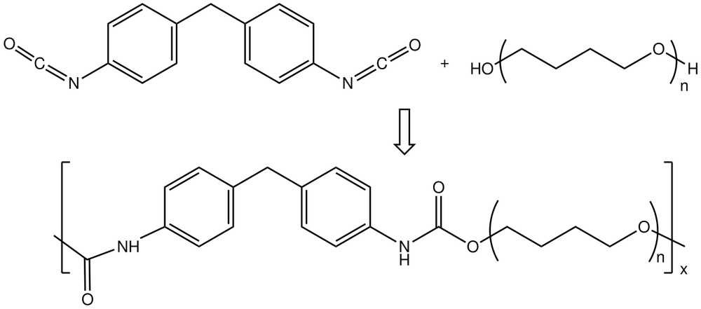

엘라스테인섬유 (Elastane Fiber)

쉽게 풀면
엘라스테인섬유는 고무줄처럼 잘 늘어났다가 놓으면 원래대로 돌아오는 성질이 아주 강한 섬유이다. 스판덱스나 라이크라라는 이름으로도 잘 알려져 있다. 소량만 섞어도 원단 전체에 신축성을 크게 더할 수 있어서 레깅스, 수영복, 스포츠웨어 등 몸에 밀착되면서도 움직이기 편한 옷을 만드는 데 널리 쓰인다.
왜 중요한가
엘라스테인섬유는 원단의 신축성과 회복성을 결정짓는 핵심 소재이기 때문에 기능성 의류와 스포츠웨어 개발 연구에서 빈번하게 다뤄진다. 혼용률에 따른 신장률과 회복률의 변화를 분석하는 연구가 특히 많이 이루어진다. 엘라스테인은 단독으로 옷감을 이루기보다 면, 폴리에스터 등 다른 섬유와 소량(수 퍼센트) 혼방되어 신축성을 부여하는 방식으로 널리 쓰이며, 이 비율이 원단의 신축성과 형태 안정성을 좌우한다.
무엇이고 어디서 작용하나
- 스판덱스·라이크라·엘라스탄으로 불리는 신축성 합성 섬유이다. 1958년 듀폰의 조지프 시버스가 발명했고 폴리에테르-폴리우레탄 공중합체이다.
- 이름 'spandex'는 'expands'의 철자 바꾸기이다. 북미는 spandex, 유럽 대륙은 elastane, 영국 등은 Lycra를 흔히 쓴다.
- 1959년 듀퐁이 상업화했고 1962년부터 본격 생산되었으며, 한국에서는 1979년 태광산업이 도요보의 기술로 처음 생산했다.
주요 기능과 기전
- 폴리우레탄은 디올과 디이소시아네이트(대개 메틸렌비스(페닐 이소시아네이트))로 만들며 사슬 연장제로 디아민을 흔히 넣는다.
- 고분자가 녹으면 분해되어 용융 가공을 할 수 없다. 농축된 고분자 용액을 방사하면서 용매를 증발시킨다.
- 원래 길이의 5배 넘게 늘어나며(5~8배로 소개되기도 한다), 강도는 고무줄의 약 3배이다.
연구에서 다루는 방식
- 면이나 폴리에스터에 소량 섞어 쓰고 몸에 붙는 운동복 등에 쓴다. 2010년 미국에서 팔린 옷의 약 80%에 스판덱스가 들어 있었다고 NPR이 보도했다.
- 스판덱스가 든 옷은 재활용이 어렵다. 5%만 들어 있어도 대부분의 기계적 재활용과 맞지 않을 수 있다.
- 1970년대에 라이크라는 피트니스 의류와 연결되었고, 2019년 코크 인더스트리즈가 라이크라 컴퍼니의 지배권을 산둥 루이에 넘겼다.
논문에서는 이렇게 쓰입니다
예시 문장
아래 예문은 용어의 쓰임을 보이려고 만든 것으로, 실제 논문 문장이 아니다.
엘라스테인섬유의 함량이 원단의 신축 성능에 직접적인 영향을 준다는 결과를 설명한다.
엘라스테인섬유가 시간이 지나면서 탄성이 떨어질 수 있다는 한계를 언급한 예문이다.
조금 더 깊게 보면
엘라스테인은 분자 구조상 단단한 부분(하드 세그먼트)과 유연한 부분(소프트 세그먼트)이 교대로 배열된 블록 공중합체 구조를 가지고 있다. 소프트 세그먼트가 늘어났다가 하드 세그먼트의 결합력으로 다시 수축하는 원리로 큰 신축성과 회복력을 동시에 나타낸다. 엘라스테인은 염소에 약해 수영복용 원단에서는 내염소성 첨가제를 넣은 내염소 스판덱스 원사가 별도로 개발되어 쓰이는 것으로 다뤄진다. 엘라스테인은 단독 나사(bare yarn)로 쓰이기보다 다른 섬유로 감싸는 커버링사나, 방적 단계에서 심사로 넣어 스테이플 섬유를 둘러 감는 코어스펀사 등 여러 형태로 투입되며, 방식에 따라 원단의 신축 거동과 촉감이 달라지는 것으로 다뤄진다.
주의할 점
엘라스테인섬유는 열과 염소계 표백제에 약해 관리를 잘못하면 탄성이 급격히 저하될 수 있으므로 세탁 방법에 주의가 필요하다.
엘라스테인은 높은 열에 취약해 고온 다림질이나 건조 시 탄성이 손상될 수 있어, 세탁 및 관리 표시를 따르는 것이 원단 수명 유지에 중요하다. 염소계 표백제에도 취약해 손상될 수 있어 세탁 시 이를 피하는 것이 권장된다. 자외선에 장시간 노출되면 고분자 사슬이 손상되어 탄성이 서서히 저하될 수 있어 보관 및 관리에도 유의해야 한다.
참고 문헌
- Wikipedia contributors. (n.d.). Spandex. Wikipedia.
- 위키백과 기여자. (n.d.). 스판덱스. 위키백과.